Last updated: 2025-04-02
Checks: 7 0
Knit directory: mito_age_fert/
This reproducible R Markdown analysis was created with workflowr (version 1.7.1). The Checks tab describes the reproducibility checks that were applied when the results were created. The Past versions tab lists the development history.
Great! Since the R Markdown file has been committed to the Git repository, you know the exact version of the code that produced these results.
Great job! The global environment was empty. Objects defined in the global environment can affect the analysis in your R Markdown file in unknown ways. For reproduciblity it’s best to always run the code in an empty environment.
The command set.seed(20230213) was run prior to running
the code in the R Markdown file. Setting a seed ensures that any results
that rely on randomness, e.g. subsampling or permutations, are
reproducible.
Great job! Recording the operating system, R version, and package versions is critical for reproducibility.
Nice! There were no cached chunks for this analysis, so you can be confident that you successfully produced the results during this run.
Great job! Using relative paths to the files within your workflowr project makes it easier to run your code on other machines.
Great! You are using Git for version control. Tracking code development and connecting the code version to the results is critical for reproducibility.
The results in this page were generated with repository version 5ebfaed. See the Past versions tab to see a history of the changes made to the R Markdown and HTML files.
Note that you need to be careful to ensure that all relevant files for
the analysis have been committed to Git prior to generating the results
(you can use wflow_publish or
wflow_git_commit). workflowr only checks the R Markdown
file, but you know if there are other scripts or data files that it
depends on. Below is the status of the Git repository when the results
were generated:
Ignored files:
Ignored: .DS_Store
Ignored: .Rhistory
Ignored: .Rproj.user/
Ignored: analysis/.DS_Store
Ignored: data/.DS_Store
Ignored: output/.DS_Store
Untracked files:
Untracked: README.html
Untracked: check_lines.R
Untracked: code/data_wrangling.R
Untracked: code/female_predictions_13-Feb-2025.sh
Untracked: code/female_rate_predictions.R
Untracked: code/plotting_Script.R
Untracked: data/Data_raw_emmely.csv
Untracked: data/SNP_data/
Untracked: data/defence.csv
Untracked: data/male_fertility.csv
Untracked: data/mito_34sigdiffSNPs_consensus_incl_colnames.csv
Untracked: data/mito_mt_copy_number.xlsx
Untracked: data/mito_mt_seq_major_alleles_sig_snptable.csv
Untracked: data/mito_mt_seq_sig_annotated.csv
Untracked: data/mito_mt_seq_sig_annotated.vcf
Untracked: data/offence.csv
Untracked: data/rawdata_PCA.csv
Untracked: data/snp-gene.txt
Untracked: data/sperm_metabolic_rate.csv
Untracked: data/sperm_viability.csv
Untracked: data/wrangled/
Untracked: figures/
Untracked: output/SNP_clusters.csv
Untracked: output/anova_tables/
Untracked: output/bod_brm.rds
Untracked: output/female_rate_dredge.rds
Untracked: output/female_rates_bb.Rdata
Untracked: output/female_rates_boot.Rdata
Untracked: output/female_rates_poly.Rdata
Untracked: output/fst_tabs.csv
Untracked: output/male_fec_dredge.rds
Untracked: output/male_hatch_dredge.rds
Untracked: output/male_hatch_dredge_reduced.rds
Untracked: output/sperm_met_dredge.rds
Untracked: output/viab_ctrl_dredge.rds
Untracked: output/viab_trt_dredge.rds
Untracked: snp_matrix_dobler.csv
Unstaged changes:
Modified: analysis/SNP_clusters.Rmd
Deleted: analysis/sperm_comp.Rmd
Modified: data/README.md
Note that any generated files, e.g. HTML, png, CSS, etc., are not included in this status report because it is ok for generated content to have uncommitted changes.
These are the previous versions of the repository in which changes were
made to the R Markdown (analysis/female_fertility.Rmd) and
HTML (docs/female_fertility.html) files. If you’ve
configured a remote Git repository (see ?wflow_git_remote),
click on the hyperlinks in the table below to view the files as they
were in that past version.
| File | Version | Author | Date | Message |
|---|---|---|---|---|
| Rmd | 5ebfaed | MartinGarlovsky | 2025-04-02 | wflow_publish(c("analysis/body_size.Rmd", "analysis/female_fertility.Rmd", |
| html | 9f5012c | MartinGarlovsky | 2024-10-11 | Build site. |
| Rmd | 0f5ea81 | MartinGarlovsky | 2024-10-11 | wflow_publish("analysis/female_fertility.Rmd") |
| html | 2ee8510 | MartinGarlovsky | 2024-10-09 | Build site. |
| Rmd | 2eea37b | MartinGarlovsky | 2024-10-09 | wflow_publish("analysis/female_fertility.Rmd") |
library(tidyverse)
library(lme4)
#library(merTools)
library(DHARMa)
library(emmeans)
library(kableExtra)
library(knitrhooks) # install with devtools::install_github("nathaneastwood/knitrhooks")
library(showtext)
library(conflicted)
select <- dplyr::select
filter <- dplyr::filter
output_max_height() # a knitrhook option
options(stringsAsFactors = FALSE)
# colour palettes
met.pal <- MetBrewer::met.brewer('Johnson')
met3 <- met.pal[c(1, 3, 5)]
# set contrasts
options(contrasts = c("contr.sum", "contr.poly"))fert_dat <- read_csv("data/wrangled/female_fertility.csv") %>%
mutate(mito_snp = as.factor(mito_snp),
coevolved = if_else(mito == nuclear, "matched", "mismatched"))First look at the data shows that fecundity appears to plateau between the first and second vial before declining. Therefore, we model fecundity across three episodes:
# progeny by mito / nuclear
fert_dat %>%
group_by(mito, nuclear, vial) %>%
summarise(mn = mean(progeny),
se = sd(progeny)/sqrt(n()),
s95 = se * 1.96) %>%
ggplot(aes(x = vial, y = mn, colour = mito)) +
geom_point(data = fert_dat,
aes(y = progeny, colour = mito), alpha = .15,
position = position_jitterdodge(dodge.width = .5, jitter.width = .1)) +
geom_errorbar(aes(ymin = mn - s95, ymax = mn + s95),
width = .25, position = position_dodge(width = .5)) +
geom_point(position = position_dodge(width = .5)) +
geom_line(aes(group = mito)) +
facet_wrap(~nuclear) +
scale_x_continuous(breaks = c(1:7)) +
scale_colour_manual(values = met3) +
scale_fill_manual(values = met3) +
labs(y = 'Fecundity per vial (EMM ± 95% CIs)') +
theme_bw() +
theme() +
#ggsave('figures/vial_means.pdf', height = 3, width = 9, dpi = 600, useDingbats = FALSE) +
NULL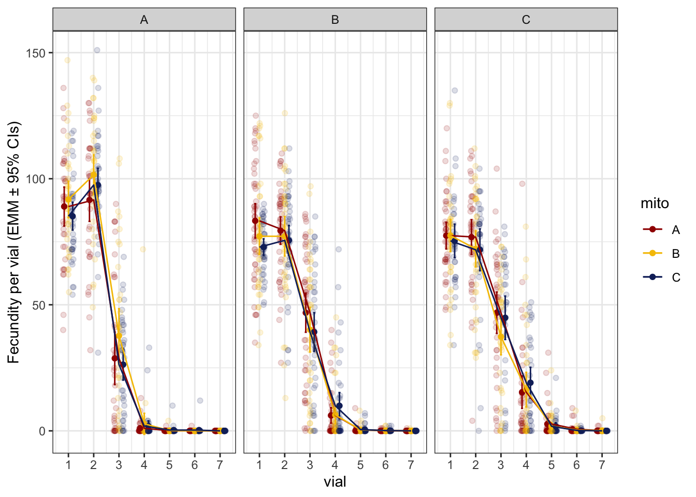
| Version | Author | Date |
|---|---|---|
| 2ee8510 | MartinGarlovsky | 2024-10-09 |
Figure 1. Per vial progeny production for each mitonculear genotype. Facets are nuclear genotypes, with colour denoting mitochondrial genotype.
We summed progeny produced from the first two vial for each female.
daydat <- fert_dat %>% filter(vial == '1' | vial == '2') %>%
dplyr::select(ID:mtn, mito_snp, coevolved, LINE, vial, progeny) %>%
pivot_wider(names_from = vial,
values_from = progeny) %>%
dplyr::rename(v1 = `1`, v2 = `2`) %>%
mutate(comb_vial = rowSums(across(c(v1, v2))))
daydat %>% pivot_longer(cols = c(v1, v2)) %>% #filter(age == "young") %>%
ggplot(aes(x = name, y = value)) +
geom_line(aes(group = ID, colour = mito)) +
tidybayes::stat_halfeye(alpha = .5) +
scale_colour_manual(values = met3) +
labs(y = 'Female fecundity') +
facet_grid(mito ~ nuclear) +
NULL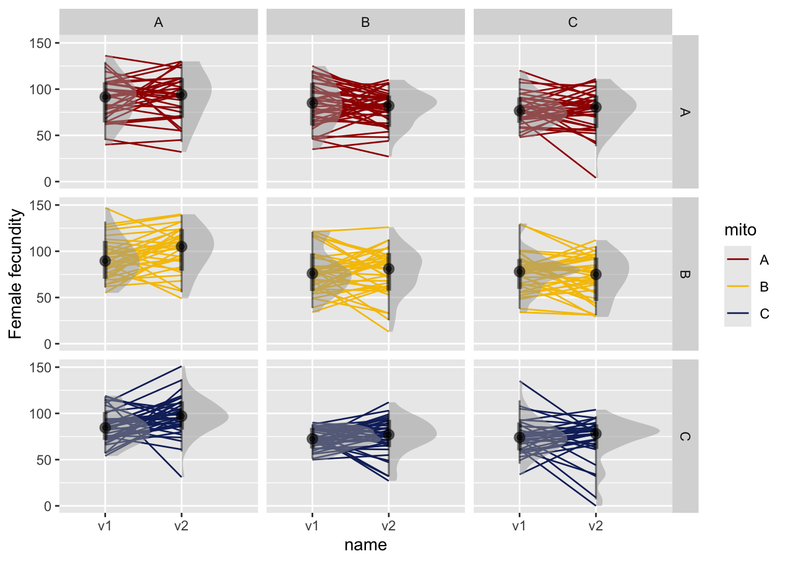
| Version | Author | Date |
|---|---|---|
| 2ee8510 | MartinGarlovsky | 2024-10-09 |
Figure 2. Female fecundity in vial 1 and vial 2. Facets are for mito and nuclear genotypes. Lines connect individual females with large points representing the mean and error bars summarise the 66% and 95% quantiles.
# combined vial 1 and vial 2
#hist(daydat$comb_vial)fecundity_early <- lmerTest::lmer(comb_vial ~ mito * nuclear + (1|LINE), data = daydat, REML = TRUE)performance::check_model(fecundity_early)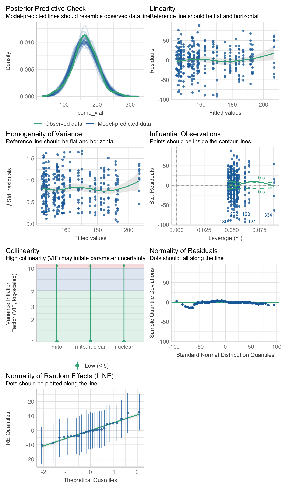
anova(fecundity_early, type = "III", ddf = "Kenward-Roger") %>% broom::tidy() %>%
as_tibble() %>% # write_csv("output/anova_tables/fecundity_early.csv") # save anova table for supp. tables
kable(digits = 3,
caption = 'Type III Analysis of Variance Table with Kenward-Roger`s method') %>%
kable_styling(full_width = FALSE)| term | sumsq | meansq | NumDF | DenDF | statistic | p.value |
|---|---|---|---|---|---|---|
| mito | 1548.543 | 774.272 | 2 | 17.787 | 0.714 | 0.503 |
| nuclear | 39590.215 | 19795.107 | 2 | 17.765 | 18.266 | 0.000 |
| mito:nuclear | 3322.807 | 830.702 | 4 | 17.750 | 0.767 | 0.561 |
emmeans(fecundity_early, pairwise ~ nuclear, adjust = "tukey")$contrasts %>% broom::tidy() %>%
kable(digits = 3,
caption = 'Posthoc Tukey tests for days effect. Results are averaged over the levels of mito') %>%
kable_styling(full_width = FALSE)| term | contrast | null.value | estimate | std.error | df | statistic | adj.p.value |
|---|---|---|---|---|---|---|---|
| nuclear | A - B | 0 | 30.404 | 6.216 | 17.556 | 4.891 | 0.000 |
| nuclear | A - C | 0 | 35.172 | 6.341 | 18.553 | 5.547 | 0.000 |
| nuclear | B - C | 0 | 4.768 | 6.222 | 17.269 | 0.766 | 0.728 |
coevo_early <- lmerTest::lmer(comb_vial ~ coevolved + (1|LINE), data = daydat, REML = TRUE)
anova(coevo_early, type = "III", ddf = "Kenward-Roger")Type III Analysis of Variance Table with Kenward-Roger's method
Sum Sq Mean Sq NumDF DenDF F value Pr(>F)
coevolved 509.6 509.6 1 25.442 0.4702 0.4991
fecundity_day1_snp <- lmerTest::lmer(comb_vial ~ mito_snp * nuclear + (1|LINE), data = daydat, REML = TRUE)
anova(fecundity_day1_snp, type = "III", ddf = "Kenward-Roger")Type III Analysis of Variance Table with Kenward-Roger's method
Sum Sq Mean Sq NumDF DenDF F value Pr(>F)
mito_snp 4327.1 540.9 8 8.6615 0.4991 0.82890
nuclear 15644.0 7822.0 2 9.2612 7.2131 0.01292 *
mito_snp:nuclear 10169.7 1452.8 7 8.9663 1.3398 0.33402
---
Signif. codes: 0 '***' 0.001 '**' 0.01 '*' 0.05 '.' 0.1 ' ' 1
early_fec_snp <- emmeans(fecundity_day1_snp, ~ mito_snp * nuclear, type = 'response') %>%
as_tibble() %>% drop_na() %>%
ggplot(aes(x = nuclear, y = emmean, fill = mito_snp)) +
geom_jitter(data = daydat,
aes(y = comb_vial, colour = mito_snp),
position = position_jitterdodge(dodge.width = .5, jitter.width = .1),
alpha = .25) +
geom_errorbar(aes(ymin = lower.CL, ymax = upper.CL),
width = .25, position = position_dodge(width = .5)) +
geom_point(size = 3, pch = 21, position = position_dodge(width = .5)) +
labs(y = 'Early life fecundity (EMM ± 95% CIs)') +
scale_colour_viridis_d(option = "H") +
scale_fill_viridis_d(option = "H") +
theme_bw() +
theme() +
NULL
early_fec_snp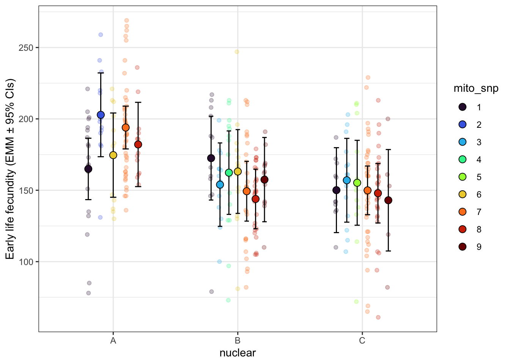
| Version | Author | Date |
|---|---|---|
| 2ee8510 | MartinGarlovsky | 2024-10-09 |
Here we sum the total number of offspring each female produced across the entire 21 days.
# summarised data
sum_fecundity <- fert_dat %>%
group_by(ID, mito, mito_snp, mtgrp, nuclear, mtn, coevolved, LINE) %>%
summarise(total.fec = sum(progeny)) %>%
ungroup() %>%
mutate(# scale variables
scaled_fec = as.numeric(scale(total.fec)),
# add observation level random effect
OLRE = 1:nrow(.))
# check mtgrp not crossed within lines
#xtabs(~ LINE + mtgrp, data = sum_fecundity)
hist(sum_fecundity$total.fec, breaks = 50)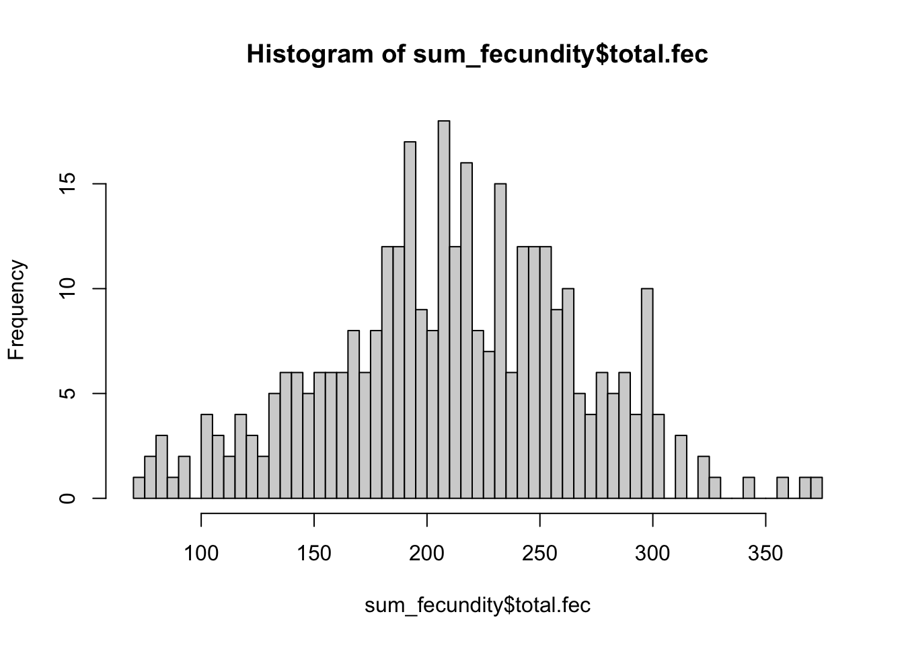
| Version | Author | Date |
|---|---|---|
| 2ee8510 | MartinGarlovsky | 2024-10-09 |
# fit linear fit
fecundity_total <- lmerTest::lmer(total.fec ~ mito * nuclear + (1|LINE), data = sum_fecundity, REML = TRUE)performance::check_model(fecundity_total)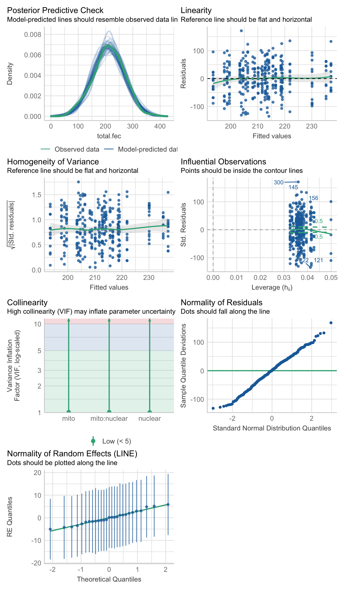
anova(fecundity_total, type = "III", ddf = "Kenward-Roger") %>% broom::tidy() %>%
as_tibble() # %>% write_csv("output/anova_tables/fecundity_total.csv") # save anova table for supp. tables# A tibble: 3 × 7 term sumsq meansq NumDF DenDF statistic p.value1 mito 2951. 1476. 2 17.6 0.477 0.628 2 nuclear 7987. 3993. 2 17.5 1.29 0.300 3 mito:nuclear 16005. 4001. 4 17.5 1.29 0.311
# grand mean
#emmeans::emmeans(fecundity_total, specs = ~1, type = "response")fecundity_coevo <- lmerTest::lmer(total.fec ~ coevolved + (1|LINE), data = sum_fecundity, REML = TRUE)
anova(fecundity_coevo, type = "III", ddf = "Kenward-Roger")Type III Analysis of Variance Table with Kenward-Roger's method
Sum Sq Mean Sq NumDF DenDF F value Pr(>F)
coevolved 2391.7 2391.7 1 25.446 0.7729 0.3875
fecundity_lmer_snp <- lmerTest::lmer(total.fec ~ mito_snp * nuclear + (1|LINE), data = sum_fecundity)
anova(fecundity_lmer_snp, type = "III", ddf = "Kenward-Roger")Type III Analysis of Variance Table with Kenward-Roger's method
Sum Sq Mean Sq NumDF DenDF F value Pr(>F)
mito_snp 19929 2491.2 8 8.1317 0.8067 0.6154
nuclear 41 20.4 2 9.5863 0.0066 0.9934
mito_snp:nuclear 47266 6752.3 7 8.6974 2.1827 0.1399
lifetime_fec_snp <- emmeans(fecundity_lmer_snp, ~ mito_snp * nuclear) %>% as_tibble() %>% drop_na() %>%
ggplot(aes(x = nuclear, y = emmean, fill = mito_snp)) +
geom_jitter(data = sum_fecundity,
aes(y = total.fec, colour = mito_snp),
position = position_jitterdodge(dodge.width = .5, jitter.width = .1),
alpha = .5) +
geom_errorbar(aes(ymin = lower.CL, ymax = upper.CL),
width = .25, position = position_dodge(width = .5)) +
geom_point(size = 3, pch = 21, position = position_dodge(width = .5)) +
labs(y = 'Lifetime fecundity (EMM ± 95% CIs)',
colour = 'nuclear', fill = 'nuclear') +
scale_colour_viridis_d(option = "H") +
scale_fill_viridis_d(option = "H") +
theme_bw() +
#theme(legend.position = 'bottom') +
NULL
lifetime_fec_snp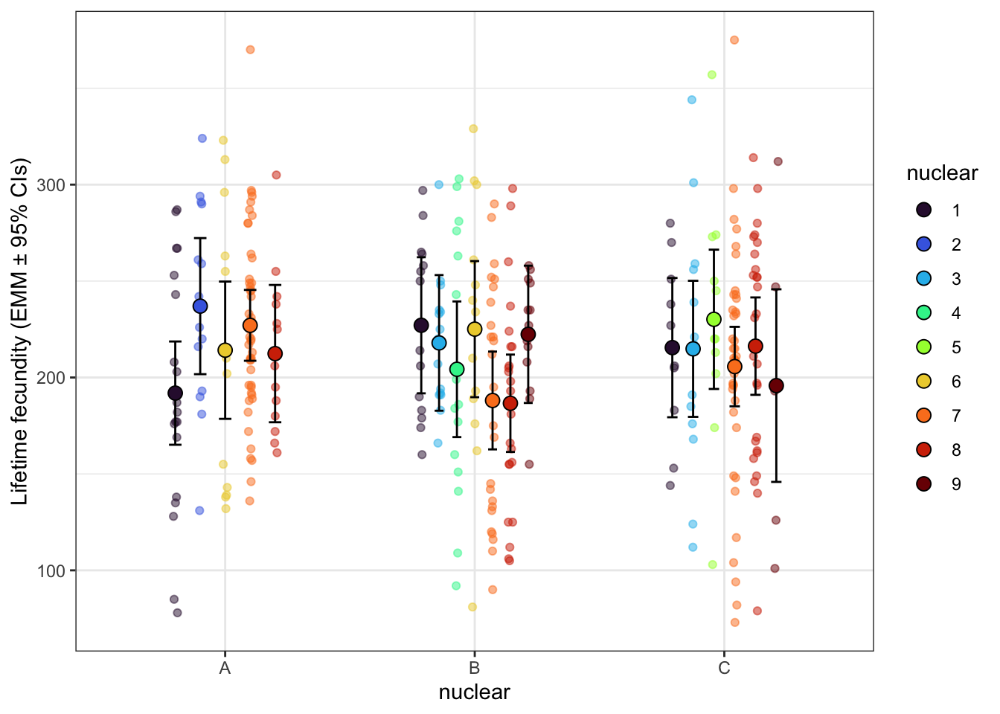
| Version | Author | Date |
|---|---|---|
| 2ee8510 | MartinGarlovsky | 2024-10-09 |
We modelled the rate of progeny production using a GLMM during the period of decline, namely from vial 2 to 6 (excluding vials 1 and 7). A quick plot of the data suggests a non-linear relationship between progeny production and vial.
fert_filt <- fert_dat %>% filter(vial != '1', vial <= 6)fert_filt %>%
ggplot(aes(x = vial, y = progeny, colour = mito)) +
geom_point(alpha = .25, position = position_dodge(width = .5)) +
stat_smooth(method = "lm", formula = y ~ poly(x, 1), colour = "black") +
facet_wrap(~ nuclear) +
scale_x_continuous(breaks = c(1:7)) +
scale_colour_manual(values = met3) +
scale_fill_manual(values = met3) +
theme_bw() +
theme() +
NULL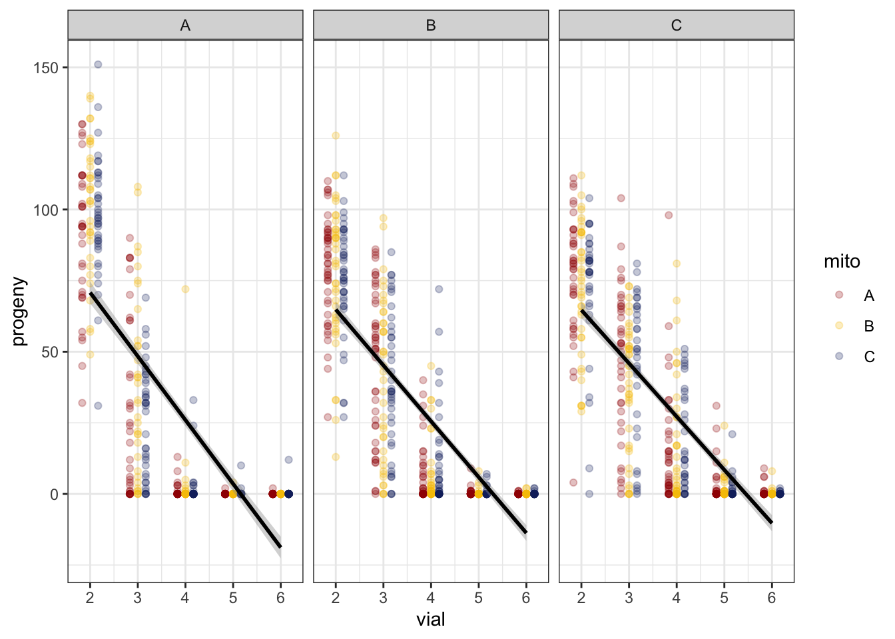
| Version | Author | Date |
|---|---|---|
| 2ee8510 | MartinGarlovsky | 2024-10-09 |
fert_filt %>%
ggplot(aes(x = vial, y = progeny, colour = mito)) +
geom_point(alpha = .25, position = position_dodge(width = .5)) +
stat_smooth(method = "lm", formula = y ~ poly(x, 2), colour = "black") +
stat_smooth(method = "lm", formula = y ~ poly(x, 3), colour = "red") +
facet_wrap(~ nuclear) +
scale_x_continuous(breaks = c(1:7)) +
scale_colour_manual(values = met3) +
scale_fill_manual(values = met3) +
theme_bw() +
theme() +
NULL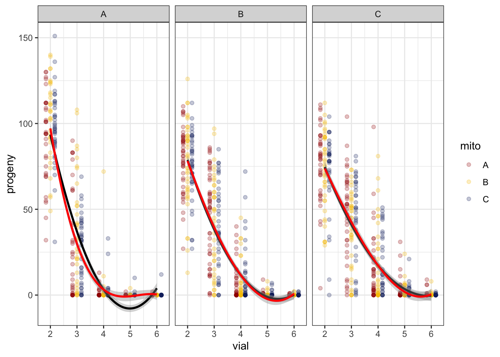
| Version | Author | Date |
|---|---|---|
| 2ee8510 | MartinGarlovsky | 2024-10-09 |
We compared a linear fit to a polynomial fit. Based on AICc, the second order polynomial fit is preferred.
# fit model
rate_glmm <- glmer(progeny ~ mito * nuclear * vial + (1|LINE:vial) + (1|ID) + (1|OLRE),
data = fert_filt, family = 'poisson',
control = glmerControl(optimizer = "bobyqa", optCtrl = list(maxfun = 50000)))
# fit model
rate_poly <- glmer(progeny ~ mito * nuclear * vial + I(vial^2) + (1|LINE:vial) + (1|ID) + (1|OLRE),
data = fert_filt, family = 'poisson',
control = glmerControl(optimizer = "bobyqa", optCtrl = list(maxfun = 50000)))
rate_poly2 <- glmer(progeny ~ mito * nuclear + vial + I(vial^2) +
mito:vial + nuclear:vial + mito:nuclear:vial +
mito:I(vial^2) + nuclear:I(vial^2) + mito:nuclear:I(vial^2) +
(1|LINE:vial) + (1|ID) + (1|OLRE),
data = fert_filt, family = 'poisson',
control = glmerControl(optimizer = "bobyqa", optCtrl = list(maxfun = 50000)))
rate_poly3 <- glmer(progeny ~ mito * nuclear + vial + I(vial^2) + I(vial^3) +
mito:vial + nuclear:vial + mito:nuclear:vial +
mito:I(vial^2) + nuclear:I(vial^2) + mito:nuclear:I(vial^2) +
mito:I(vial^3) + nuclear:I(vial^3) + mito:nuclear:I(vial^3) +
(1|LINE:vial) + (1|ID) + (1|OLRE),
data = fert_filt, family = 'poisson',
control = glmerControl(optimizer = "Nelder_Mead", optCtrl = list(maxfun = 50000)))
MuMIn::model.sel(rate_glmm,
rate_poly,
rate_poly2,
rate_poly3)Model selection table
(Int) mit ncl vil mit:ncl mit:vil ncl:vil mit:ncl:vil vil^2
rate_poly3 -2.503 + + 7.8500 + + + + -2.6540
rate_poly2 6.776 + + -0.7961 + + + + -0.1757
rate_poly 6.833 + + -0.8313 + + + + -0.1710
rate_glmm 8.829 + + -2.0700 + + + +
I(vil^2):mit I(vil^2):ncl I(vil^2):mit:ncl vil^3 I(vil^3):mit
rate_poly3 + + + 0.2212 +
rate_poly2 + + +
rate_poly
rate_glmm
I(vil^3):ncl I(vil^3):mit:ncl control df logLik AICc
rate_poly3 + + g(N_M,l(50000)) 39 -4831.254 9742.4
rate_poly2 g(b,l(50000)) 30 -4871.457 9804.0
rate_poly g(b,l(50000)) 22 -4882.592 9809.8
rate_glmm g(b,l(50000)) 21 -4891.023 9824.6
delta weight
rate_poly3 0.00 1
rate_poly2 61.64 0
rate_poly 67.39 0
rate_glmm 82.20 0
Abbreviations:
control: g(b,l(50000)) = 'glmerControl(bobyqa,list(50000))',
g(N_M,l(50000)) = 'glmerControl(Nelder_Mead,list(50000))'
Models ranked by AICc(x)
Random terms (all models):
1 | LINE:vial, 1 | ID, 1 | OLRE
performance::check_model(rate_poly3)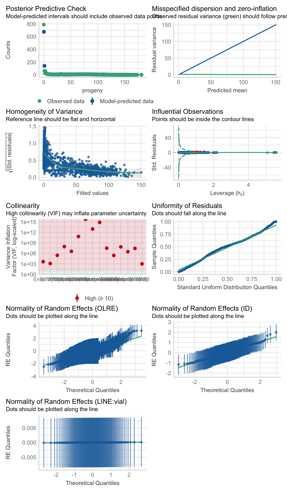
performance::check_overdispersion(rate_poly3) # not overdispersed# Overdispersion test
dispersion ratio = 0.217
Pearson's Chi-Squared = 357.842
p-value = 1
performance::check_zeroinflation(rate_poly3) # is zero inflated# Check for zero-inflation
Observed zeros: 788
Predicted zeros: 677
Ratio: 0.86
testDispersion(rate_poly3)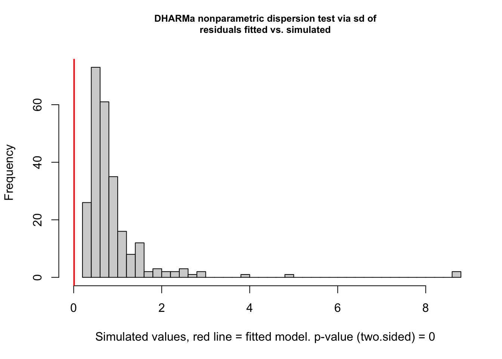
| Version | Author | Date |
|---|---|---|
| 2ee8510 | MartinGarlovsky | 2024-10-09 |
DHARMa nonparametric dispersion test via sd of residuals fitted vs.
simulated
data: simulationOutput
dispersion = 0.010683, p-value < 2.2e-16
alternative hypothesis: two.sided
simulationOutput <- simulateResiduals(fittedModel = rate_poly3, plot = FALSE)
testZeroInflation(simulationOutput)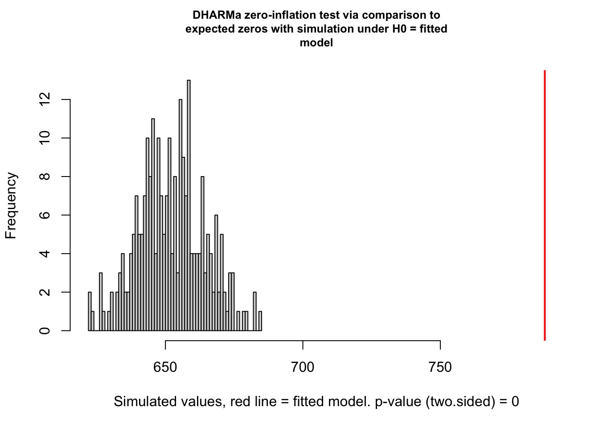
| Version | Author | Date |
|---|---|---|
| 2ee8510 | MartinGarlovsky | 2024-10-09 |
DHARMa zero-inflation test via comparison to expected zeros with
simulation under H0 = fitted model
data: simulationOutput
ratioObsSim = 1.2074, p-value < 2.2e-16
alternative hypothesis: two.sided
hist(residuals(simulationOutput))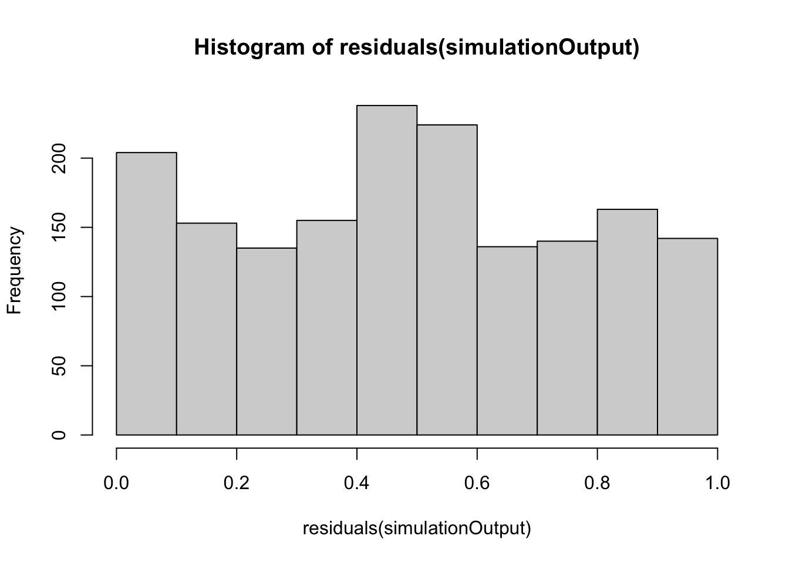
| Version | Author | Date |
|---|---|---|
| 2ee8510 | MartinGarlovsky | 2024-10-09 |
hist(residuals(simulationOutput, quantileFunction = qnorm, outlierValues = c(-7,7)))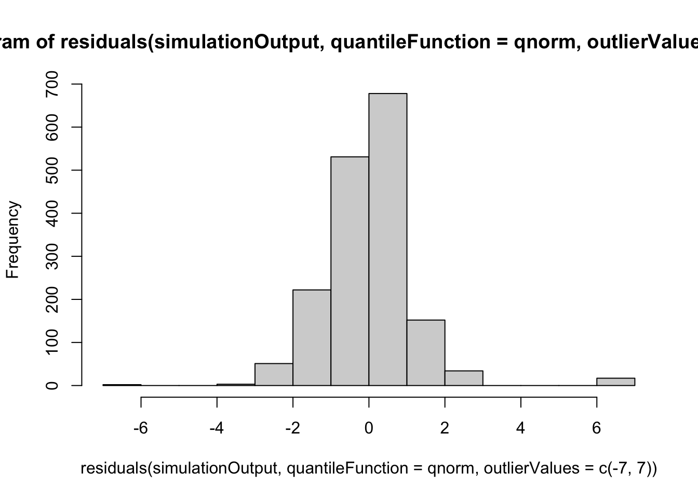
| Version | Author | Date |
|---|---|---|
| 2ee8510 | MartinGarlovsky | 2024-10-09 |
plot(simulationOutput)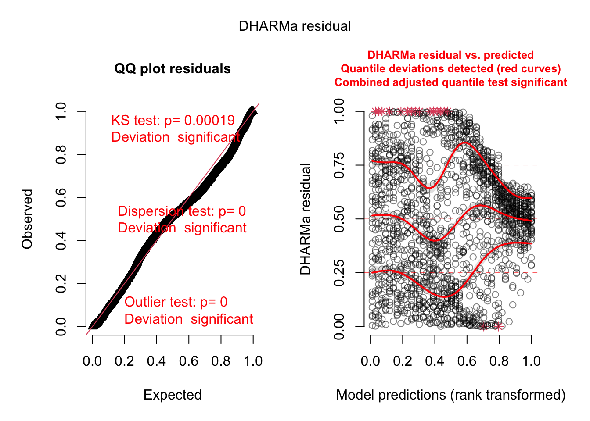
| Version | Author | Date |
|---|---|---|
| 2ee8510 | MartinGarlovsky | 2024-10-09 |
car::Anova(rate_poly3, type = 'III') %>%
broom::tidy() %>% as_tibble() # %>% write_csv("output/anova_tables/rate_poly.csv") # save anova table for supp. tables# A tibble: 16 × 4 term statistic df p.value1 (Intercept) 4.73 1 2.97e- 2 2 mito 0.354 2 8.38e- 1 3 nuclear 5.74 2 5.68e- 2 4 vial 54.7 1 1.42e-13 5 I(vial^2) 76.0 1 2.86e-18 6 I(vial^3) 65.6 1 5.56e-16 7 mito:nuclear 1.32 4 8.57e- 1 8 mito:vial 0.507 2 7.76e- 1 9 nuclear:vial 9.91 2 7.04e- 3 10 mito:I(vial^2) 0.680 2 7.12e- 1 11 nuclear:I(vial^2) 15.2 2 4.97e- 4 12 mito:I(vial^3) 0.797 2 6.71e- 1 13 nuclear:I(vial^3) 17.7 2 1.41e- 4 14 mito:nuclear:vial 1.23 4 8.73e- 1 15 mito:nuclear:I(vial^2) 1.03 4 9.05e- 1 16 mito:nuclear:I(vial^3) 0.961 4 9.16e- 1
#summary(rate_glmm)
pairs(emtrends(rate_poly3, c("mito", "nuclear"), var = "I(vial^3)")) %>%
as_tibble() %>% filter(p.value < 0.05)# A tibble: 13 × 6 contrast estimate SE df z.ratio p.value1 A A - A C -0.0270 0.00849 Inf -3.18 0.0389 2 A A - B C -0.0314 0.00852 Inf -3.68 0.00714 3 A A - C C -0.0308 0.00867 Inf -3.55 0.0114 4 B A - C B -0.0277 0.00883 Inf -3.14 0.0449 5 B A - A C -0.0391 0.00858 Inf -4.55 0.000184 6 B A - B C -0.0434 0.00858 Inf -5.06 0.0000148 7 B A - C C -0.0429 0.00874 Inf -4.90 0.0000335 8 C A - A C -0.0255 0.00748 Inf -3.41 0.0188 9 C A - B C -0.0299 0.00749 Inf -3.98 0.00221 10 C A - C C -0.0293 0.00766 Inf -3.82 0.00420 11 A B - A C -0.0202 0.00626 Inf -3.23 0.0337 12 A B - B C -0.0246 0.00628 Inf -3.91 0.00295 13 A B - C C -0.0240 0.00648 Inf -3.70 0.00665
emt <- emtrends(rate_poly3, "nuclear", var = "I(vial^3)")
#pairs(emt)
rate_norms <- emtrends(rate_poly2, c("mito", "nuclear"), var = "I(vial^3)") %>%
as_tibble() %>% rename(trend = `I(vial^3).trend`) %>%
ggplot(aes(x = nuclear, y = trend, fill = mito)) +
geom_line(aes(group = mito, colour = mito), position = position_dodge(width = .5)) +
geom_errorbar(aes(ymin = asymp.LCL, ymax = asymp.UCL),
width = .25, position = position_dodge(width = .5)) +
geom_point(size = 5, pch = 21, position = position_dodge(width = .5)) +
labs(y = 'Slope (EMM)') +
scale_colour_manual(values = met3) +
scale_fill_manual(values = met3) +
theme_bw() +
theme() +
NULLHere we generate model predicted values for a model with a simplified random effects structure. This is unused in the manuscript at present.
# create new data for prediction. We ignore the ID and OLRE random effects which becomes unwieldy.
prediction_data <- expand.grid(vial = seq(from = 2, to = 6, length = 100),
#ID = unique(fert_filt$ID),
#OLRE = unique(fert_filt$OLRE),
LINE = levels(as.factor(fert_filt$LINE))) %>%
mutate(mito = str_sub(LINE, 1, 1),
nuclear = str_sub(LINE, 2, 2))
mySumm <- function(.) {
predict(., newdata=prediction_data, re.form = ~ (1|LINE:vial), allow.new.levels = TRUE)
}
### Reader beware - this takes a long time to run!!! ~ 5 days on the HPC
# #lme4::bootMer() method 2
# PI.boot2.time <- system.time(
# boot2 <- lme4::bootMer(rate_poly3, mySumm, nsim=1000, use.u=TRUE, type="parametric", .progress = "txt")
# )
##saveRDS(boot2, file = "output/female_rates_poly.Rdata")
boot2 <- read_rds("output/female_rates_poly.Rdata")
####Collapse bootstrap into median, 95% PI
sumBoot <- function(merBoot) {
return(
data.frame(fit = apply(merBoot$t, 2, function(x) as.numeric(quantile(x, probs=.5, na.rm=TRUE))),
lwr = apply(merBoot$t, 2, function(x) as.numeric(quantile(x, probs=.025, na.rm=TRUE))),
upr = apply(merBoot$t, 2, function(x) as.numeric(quantile(x, probs=.975, na.rm=TRUE)))
)
)
}
PI.boot2 <- sumBoot(boot2)
plot_data <- data.frame(prediction_data, PI.boot2) %>% rename(progeny = "fit")
#head(plot_data)
plot_data_summary <- plot_data %>%
group_by(mito, nuclear, vial) %>%
summarise(mn_fit = mean(progeny),
#mn_sef = mean(se.fit),
mn_lwr = mean(lwr),
mn_upr = mean(upr)
) %>%
ungroup() %>% mutate(across(4:6, ~exp(.x)))
# plot
fert_mns <- fert_filt %>%
group_by(mito, nuclear, vial) %>%
summarise(mn = mean(progeny),
se = sd(progeny)/sqrt(n()),
s95 = se * 1.96)
rateP <- fert_filt %>%
ggplot(aes(x = vial, y = progeny, fill = mito)) +
# geom_point(aes(y = progeny, colour = mito, shape = mito), alpha = .15,
# position = position_jitterdodge(dodge.width = .5, jitter.width = .1)) +
# geom_jitter(data = fert_filt %>%
# group_by(LINE, vial) %>%
# summarise(mn = mean(progeny)) %>%
# separate(LINE, into = c("mito", "nuclear", NA), sep = "(?<=.)", remove = FALSE),
# aes(y = mn, colour = mito),
# position = position_jitterdodge(dodge.width = .5, jitter.width = .1),
# alpha = .5, size = 1) +
geom_ribbon(data = plot_data_summary,
aes(y = mn_fit, ymin = mn_lwr, ymax = mn_upr, fill = mito, group = mito),
alpha = .5, colour = NA) +
geom_line(data = plot_data_summary,
aes(y = mn_fit, colour = mito, group = mito)) +
geom_errorbar(data = fert_mns,
aes(y = mn, ymin = mn - s95, ymax = mn + s95),
width = .25, position = position_dodge(width = .5)) +
geom_point(data = fert_mns, aes(y = mn), position = position_dodge(width = .5), size = 3, pch = 21) +
scale_x_continuous(breaks = c(1:7)) +
scale_colour_manual(values = met3) +
scale_fill_manual(values = met3) +
labs(y = 'No. progeny (mean ± 95% CI)') +
facet_wrap(~ nuclear) +
theme_bw() +
theme() +
#ggsave('figures/vial_means.pdf', height = 3, width = 9, dpi = 600, useDingbats = FALSE) +
NULL
rateP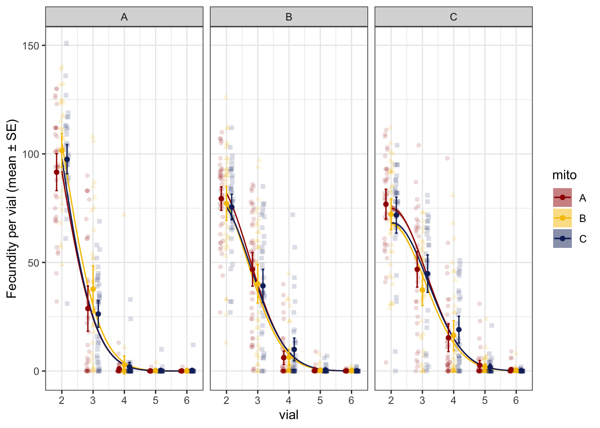
# raw data
fem_fert_rawplot <- fert_dat %>%
group_by(mito, nuclear, vial) %>%
summarise(mn = mean(progeny),
se = sd(progeny)/sqrt(n()),
s95 = se * 1.96) %>%
ggplot(aes(x = vial, y = mn, colour = mito)) +
geom_point(data = fert_dat,
aes(y = progeny, colour = mito), alpha = .15,
position = position_jitterdodge(dodge.width = .5, jitter.width = .1)) +
geom_errorbar(aes(ymin = mn - s95, ymax = mn + s95),
width = .25, position = position_dodge(width = .5)) +
geom_point(position = position_dodge(width = .5)) +
scale_x_continuous(breaks = c(1:7)) +
scale_colour_manual(values = met3) +
scale_fill_manual(values = met3) +
labs(y = 'Fecundity per vial (mean ± SE)') +
facet_wrap(~ nuclear) +
theme_bw() +
theme() +
NULL
#ggsave(filename = 'figures/fem_fert_rawplot.pdf', height = 4, width = 9, dpi = 600, useDingbats = FALSE)rate_coevo <- glmer(progeny ~ coevolved + vial + I(vial^2) + I(vial^3) +
coevolved:vial + coevolved:I(vial^2) + coevolved:I(vial^3) +
(1|LINE:vial) + (1|ID) + (1|OLRE),
data = fert_filt, family = 'poisson',
control = glmerControl(optimizer = "Nelder_Mead", optCtrl = list(maxfun = 50000)))
car::Anova(rate_coevo, type = 'III')Analysis of Deviance Table (Type III Wald chisquare tests)
Response: progeny
Chisq Df Pr(>Chisq)
(Intercept) 0.0184 1 0.8920617
coevolved 0.0922 1 0.7613832
vial 8.9395 1 0.0027907 **
I(vial^2) 15.5815 1 7.902e-05 ***
I(vial^3) 14.8596 1 0.0001158 ***
coevolved:vial 0.1433 1 0.7049856
coevolved:I(vial^2) 0.1800 1 0.6713596
coevolved:I(vial^3) 0.2152 1 0.6427170
---
Signif. codes: 0 '***' 0.001 '**' 0.01 '*' 0.05 '.' 0.1 ' ' 1
# fit model
rate_glmm_snp <- glmer(progeny ~ mito_snp * nuclear * vial + I(vial^2) + I(vial^3) +
mito_snp:I(vial^2) + nuclear:I(vial^2) + mito_snp:nuclear:I(vial^2) +
mito_snp:I(vial^3) + nuclear:I(vial^3) + mito_snp:nuclear:I(vial^3) +
(1|LINE:vial) + (1|ID) + (1|OLRE),
data = fert_filt, family = 'poisson',
control= glmerControl(optimizer="bobyqa", optCtrl=list(maxfun=50000)))
car::Anova(rate_glmm_snp, type = 'III')Analysis of Deviance Table (Type III Wald chisquare tests)
Response: progeny
Chisq Df Pr(>Chisq)
(Intercept) 0.0000 1 0.9972
mito_snp 6.5334 8 0.5877
nuclear 0.4996 2 0.7790
vial 0.0000 1 0.9950
I(vial^2) 0.0000 1 0.9960
I(vial^3) 0.0000 1 0.9979
mito_snp:nuclear 3.6091 7 0.8235
mito_snp:vial 6.7897 8 0.5595
nuclear:vial 1.2341 2 0.5395
mito_snp:I(vial^2) 6.4727 8 0.5944
nuclear:I(vial^2) 2.5152 2 0.2843
mito_snp:I(vial^3) 6.0691 8 0.6395
nuclear:I(vial^3) 3.8058 2 0.1491
mito_snp:nuclear:vial 3.5854 7 0.8261
mito_snp:nuclear:I(vial^2) 3.2984 7 0.8561
mito_snp:nuclear:I(vial^3) 3.0956 7 0.8760
#summary(rate_glmm_snp)
pairs(emtrends(rate_glmm_snp, c("mito_snp", "nuclear"), var = "I(vial^3)"))contrast estimate SE df z.ratio p.value mito_snp1 A - mito_snp2 A -0.114167 16.30000 Inf -0.007 1.0000 mito_snp1 A - mito_snp3 A nonEst NA NA NA NA mito_snp1 A - mito_snp4 A nonEst NA NA NA NA mito_snp1 A - mito_snp5 A nonEst NA NA NA NA mito_snp1 A - mito_snp6 A 0.010118 25.90000 Inf 0.000 1.0000 mito_snp1 A - mito_snp7 A -0.101017 16.30000 Inf -0.006 1.0000 mito_snp1 A - mito_snp8 A -0.114351 16.30000 Inf -0.007 1.0000 mito_snp1 A - mito_snp9 A nonEst NA NA NA NA mito_snp1 A - mito_snp1 B -0.120473 16.30000 Inf -0.007 1.0000 mito_snp1 A - mito_snp2 B nonEst NA NA NA NA mito_snp1 A - mito_snp3 B -0.097210 16.30000 Inf -0.006 1.0000 mito_snp1 A - mito_snp4 B -0.121463 16.30000 Inf -0.007 1.0000 mito_snp1 A - mito_snp5 B nonEst NA NA NA NA mito_snp1 A - mito_snp6 B -0.115360 16.30000 Inf -0.007 1.0000 mito_snp1 A - mito_snp7 B -0.119589 16.30000 Inf -0.007 1.0000 mito_snp1 A - mito_snp8 B -0.126504 16.30000 Inf -0.008 1.0000 mito_snp1 A - mito_snp9 B -0.114687 16.30000 Inf -0.007 1.0000 mito_snp1 A - mito_snp1 C -0.141533 16.30000 Inf -0.009 1.0000 mito_snp1 A - mito_snp2 C nonEst NA NA NA NA mito_snp1 A - mito_snp3 C -0.121178 16.30000 Inf -0.007 1.0000 mito_snp1 A - mito_snp4 C nonEst NA NA NA NA mito_snp1 A - mito_snp5 C -0.136879 16.30000 Inf -0.008 1.0000 mito_snp1 A - mito_snp6 C nonEst NA NA NA NA mito_snp1 A - mito_snp7 C -0.138078 16.30000 Inf -0.008 1.0000 mito_snp1 A - mito_snp8 C -0.135591 16.30000 Inf -0.008 1.0000 mito_snp1 A - mito_snp9 C -0.151703 16.30000 Inf -0.009 1.0000 mito_snp2 A - mito_snp3 A nonEst NA NA NA NA mito_snp2 A - mito_snp4 A nonEst NA NA NA NA mito_snp2 A - mito_snp5 A nonEst NA NA NA NA mito_snp2 A - mito_snp6 A 0.124284 20.20000 Inf 0.006 1.0000 mito_snp2 A - mito_snp7 A 0.013150 0.01200 Inf 1.099 0.9998 mito_snp2 A - mito_snp8 A -0.000185 0.01390 Inf -0.013 1.0000 mito_snp2 A - mito_snp9 A nonEst NA NA NA NA mito_snp2 A - mito_snp1 B -0.006307 0.01270 Inf -0.496 1.0000 mito_snp2 A - mito_snp2 B nonEst NA NA NA NA mito_snp2 A - mito_snp3 B 0.016957 0.01350 Inf 1.260 0.9988 mito_snp2 A - mito_snp4 B -0.007296 0.01300 Inf -0.563 1.0000 mito_snp2 A - mito_snp5 B nonEst NA NA NA NA mito_snp2 A - mito_snp6 B -0.001193 0.01290 Inf -0.093 1.0000 mito_snp2 A - mito_snp7 B -0.005423 0.01200 Inf -0.452 1.0000 mito_snp2 A - mito_snp8 B -0.012337 0.01160 Inf -1.061 0.9999 mito_snp2 A - mito_snp9 B -0.000520 0.01290 Inf -0.040 1.0000 mito_snp2 A - mito_snp1 C -0.027366 0.01230 Inf -2.219 0.7412 mito_snp2 A - mito_snp2 C nonEst NA NA NA NA mito_snp2 A - mito_snp3 C -0.007011 0.01270 Inf -0.551 1.0000 mito_snp2 A - mito_snp4 C nonEst NA NA NA NA mito_snp2 A - mito_snp5 C -0.022712 0.01220 Inf -1.864 0.9251 mito_snp2 A - mito_snp6 C nonEst NA NA NA NA mito_snp2 A - mito_snp7 C -0.023912 0.01090 Inf -2.185 0.7640 mito_snp2 A - mito_snp8 C -0.021424 0.01120 Inf -1.911 0.9083 mito_snp2 A - mito_snp9 C -0.037536 0.01560 Inf -2.407 0.6028 mito_snp3 A - mito_snp4 A nonEst NA NA NA NA mito_snp3 A - mito_snp5 A nonEst NA NA NA NA mito_snp3 A - mito_snp6 A nonEst NA NA NA NA mito_snp3 A - mito_snp7 A nonEst NA NA NA NA mito_snp3 A - mito_snp8 A nonEst NA NA NA NA mito_snp3 A - mito_snp9 A nonEst NA NA NA NA mito_snp3 A - mito_snp1 B nonEst NA NA NA NA mito_snp3 A - mito_snp2 B nonEst NA NA NA NA mito_snp3 A - mito_snp3 B nonEst NA NA NA NA mito_snp3 A - mito_snp4 B nonEst NA NA NA NA mito_snp3 A - mito_snp5 B nonEst NA NA NA NA mito_snp3 A - mito_snp6 B nonEst NA NA NA NA mito_snp3 A - mito_snp7 B nonEst NA NA NA NA mito_snp3 A - mito_snp8 B nonEst NA NA NA NA mito_snp3 A - mito_snp9 B nonEst NA NA NA NA mito_snp3 A - mito_snp1 C nonEst NA NA NA NA mito_snp3 A - mito_snp2 C nonEst NA NA NA NA mito_snp3 A - mito_snp3 C nonEst NA NA NA NA mito_snp3 A - mito_snp4 C nonEst NA NA NA NA mito_snp3 A - mito_snp5 C nonEst NA NA NA NA mito_snp3 A - mito_snp6 C nonEst NA NA NA NA mito_snp3 A - mito_snp7 C nonEst NA NA NA NA mito_snp3 A - mito_snp8 C nonEst NA NA NA NA mito_snp3 A - mito_snp9 C nonEst NA NA NA NA mito_snp4 A - mito_snp5 A nonEst NA NA NA NA mito_snp4 A - mito_snp6 A nonEst NA NA NA NA mito_snp4 A - mito_snp7 A nonEst NA NA NA NA mito_snp4 A - mito_snp8 A nonEst NA NA NA NA mito_snp4 A - mito_snp9 A nonEst NA NA NA NA mito_snp4 A - mito_snp1 B nonEst NA NA NA NA mito_snp4 A - mito_snp2 B nonEst NA NA NA NA mito_snp4 A - mito_snp3 B nonEst NA NA NA NA mito_snp4 A - mito_snp4 B nonEst NA NA NA NA mito_snp4 A - mito_snp5 B nonEst NA NA NA NA mito_snp4 A - mito_snp6 B nonEst NA NA NA NA mito_snp4 A - mito_snp7 B nonEst NA NA NA NA mito_snp4 A - mito_snp8 B nonEst NA NA NA NA mito_snp4 A - mito_snp9 B nonEst NA NA NA NA mito_snp4 A - mito_snp1 C nonEst NA NA NA NA mito_snp4 A - mito_snp2 C nonEst NA NA NA NA mito_snp4 A - mito_snp3 C nonEst NA NA NA NA mito_snp4 A - mito_snp4 C nonEst NA NA NA NA mito_snp4 A - mito_snp5 C nonEst NA NA NA NA mito_snp4 A - mito_snp6 C nonEst NA NA NA NA mito_snp4 A - mito_snp7 C nonEst NA NA NA NA mito_snp4 A - mito_snp8 C nonEst NA NA NA NA mito_snp4 A - mito_snp9 C nonEst NA NA NA NA mito_snp5 A - mito_snp6 A nonEst NA NA NA NA mito_snp5 A - mito_snp7 A nonEst NA NA NA NA mito_snp5 A - mito_snp8 A nonEst NA NA NA NA mito_snp5 A - mito_snp9 A nonEst NA NA NA NA mito_snp5 A - mito_snp1 B nonEst NA NA NA NA mito_snp5 A - mito_snp2 B nonEst NA NA NA NA mito_snp5 A - mito_snp3 B nonEst NA NA NA NA mito_snp5 A - mito_snp4 B nonEst NA NA NA NA mito_snp5 A - mito_snp5 B nonEst NA NA NA NA mito_snp5 A - mito_snp6 B nonEst NA NA NA NA mito_snp5 A - mito_snp7 B nonEst NA NA NA NA mito_snp5 A - mito_snp8 B nonEst NA NA NA NA mito_snp5 A - mito_snp9 B nonEst NA NA NA NA mito_snp5 A - mito_snp1 C nonEst NA NA NA NA mito_snp5 A - mito_snp2 C nonEst NA NA NA NA mito_snp5 A - mito_snp3 C nonEst NA NA NA NA mito_snp5 A - mito_snp4 C nonEst NA NA NA NA mito_snp5 A - mito_snp5 C nonEst NA NA NA NA mito_snp5 A - mito_snp6 C nonEst NA NA NA NA mito_snp5 A - mito_snp7 C nonEst NA NA NA NA mito_snp5 A - mito_snp8 C nonEst NA NA NA NA mito_snp5 A - mito_snp9 C nonEst NA NA NA NA mito_snp6 A - mito_snp7 A -0.111135 20.20000 Inf -0.006 1.0000 mito_snp6 A - mito_snp8 A -0.124469 20.20000 Inf -0.006 1.0000 mito_snp6 A - mito_snp9 A nonEst NA NA NA NA mito_snp6 A - mito_snp1 B -0.130591 20.20000 Inf -0.006 1.0000 mito_snp6 A - mito_snp2 B nonEst NA NA NA NA mito_snp6 A - mito_snp3 B -0.107328 20.20000 Inf -0.005 1.0000 mito_snp6 A - mito_snp4 B -0.131581 20.20000 Inf -0.007 1.0000 mito_snp6 A - mito_snp5 B nonEst NA NA NA NA mito_snp6 A - mito_snp6 B -0.125478 20.20000 Inf -0.006 1.0000 mito_snp6 A - mito_snp7 B -0.129707 20.20000 Inf -0.006 1.0000 mito_snp6 A - mito_snp8 B -0.136622 20.20000 Inf -0.007 1.0000 mito_snp6 A - mito_snp9 B -0.124805 20.20000 Inf -0.006 1.0000 mito_snp6 A - mito_snp1 C -0.151651 20.20000 Inf -0.008 1.0000 mito_snp6 A - mito_snp2 C nonEst NA NA NA NA mito_snp6 A - mito_snp3 C -0.131295 20.20000 Inf -0.007 1.0000 mito_snp6 A - mito_snp4 C nonEst NA NA NA NA mito_snp6 A - mito_snp5 C -0.146996 20.20000 Inf -0.007 1.0000 mito_snp6 A - mito_snp6 C nonEst NA NA NA NA mito_snp6 A - mito_snp7 C -0.148196 20.20000 Inf -0.007 1.0000 mito_snp6 A - mito_snp8 C -0.145708 20.20000 Inf -0.007 1.0000 mito_snp6 A - mito_snp9 C -0.161821 20.20000 Inf -0.008 1.0000 mito_snp7 A - mito_snp8 A -0.013335 0.01140 Inf -1.172 0.9995 mito_snp7 A - mito_snp9 A nonEst NA NA NA NA mito_snp7 A - mito_snp1 B -0.019457 0.00991 Inf -1.964 0.8864 mito_snp7 A - mito_snp2 B nonEst NA NA NA NA mito_snp7 A - mito_snp3 B 0.003807 0.01080 Inf 0.351 1.0000 mito_snp7 A - mito_snp4 B -0.020446 0.01020 Inf -2.002 0.8689 mito_snp7 A - mito_snp5 B nonEst NA NA NA NA mito_snp7 A - mito_snp6 B -0.014343 0.01010 Inf -1.418 0.9951 mito_snp7 A - mito_snp7 B -0.018573 0.00894 Inf -2.078 0.8292 mito_snp7 A - mito_snp8 B -0.025487 0.00845 Inf -3.016 0.1921 mito_snp7 A - mito_snp9 B -0.013670 0.01010 Inf -1.351 0.9972 mito_snp7 A - mito_snp1 C -0.040516 0.00940 Inf -4.312 0.0022 mito_snp7 A - mito_snp2 C nonEst NA NA NA NA mito_snp7 A - mito_snp3 C -0.020161 0.00990 Inf -2.036 0.8520 mito_snp7 A - mito_snp4 C nonEst NA NA NA NA mito_snp7 A - mito_snp5 C -0.035862 0.00920 Inf -3.897 0.0118 mito_snp7 A - mito_snp6 C nonEst NA NA NA NA mito_snp7 A - mito_snp7 C -0.037061 0.00748 Inf -4.955 0.0001 mito_snp7 A - mito_snp8 C -0.034574 0.00787 Inf -4.394 0.0015 mito_snp7 A - mito_snp9 C -0.050686 0.01340 Inf -3.784 0.0181 mito_snp8 A - mito_snp9 A nonEst NA NA NA NA mito_snp8 A - mito_snp1 B -0.006122 0.01220 Inf -0.503 1.0000 mito_snp8 A - mito_snp2 B nonEst NA NA NA NA mito_snp8 A - mito_snp3 B 0.017141 0.01290 Inf 1.325 0.9978 mito_snp8 A - mito_snp4 B -0.007111 0.01240 Inf -0.572 1.0000 mito_snp8 A - mito_snp5 B nonEst NA NA NA NA mito_snp8 A - mito_snp6 B -0.001009 0.01230 Inf -0.082 1.0000 mito_snp8 A - mito_snp7 B -0.005238 0.01140 Inf -0.459 1.0000 mito_snp8 A - mito_snp8 B -0.012153 0.01100 Inf -1.102 0.9998 mito_snp8 A - mito_snp9 B -0.000336 0.01230 Inf -0.027 1.0000 mito_snp8 A - mito_snp1 C -0.027182 0.01180 Inf -2.311 0.6757 mito_snp8 A - mito_snp2 C nonEst NA NA NA NA mito_snp8 A - mito_snp3 C -0.006826 0.01220 Inf -0.561 1.0000 mito_snp8 A - mito_snp4 C nonEst NA NA NA NA mito_snp8 A - mito_snp5 C -0.022527 0.01160 Inf -1.940 0.8964 mito_snp8 A - mito_snp6 C nonEst NA NA NA NA mito_snp8 A - mito_snp7 C -0.023727 0.01030 Inf -2.304 0.6806 mito_snp8 A - mito_snp8 C -0.021239 0.01060 Inf -2.007 0.8665 mito_snp8 A - mito_snp9 C -0.037352 0.01520 Inf -2.465 0.5573 mito_snp9 A - mito_snp1 B nonEst NA NA NA NA mito_snp9 A - mito_snp2 B nonEst NA NA NA NA mito_snp9 A - mito_snp3 B nonEst NA NA NA NA mito_snp9 A - mito_snp4 B nonEst NA NA NA NA mito_snp9 A - mito_snp5 B nonEst NA NA NA NA mito_snp9 A - mito_snp6 B nonEst NA NA NA NA mito_snp9 A - mito_snp7 B nonEst NA NA NA NA mito_snp9 A - mito_snp8 B nonEst NA NA NA NA mito_snp9 A - mito_snp9 B nonEst NA NA NA NA mito_snp9 A - mito_snp1 C nonEst NA NA NA NA mito_snp9 A - mito_snp2 C nonEst NA NA NA NA mito_snp9 A - mito_snp3 C nonEst NA NA NA NA mito_snp9 A - mito_snp4 C nonEst NA NA NA NA mito_snp9 A - mito_snp5 C nonEst NA NA NA NA mito_snp9 A - mito_snp6 C nonEst NA NA NA NA mito_snp9 A - mito_snp7 C nonEst NA NA NA NA mito_snp9 A - mito_snp8 C nonEst NA NA NA NA mito_snp9 A - mito_snp9 C nonEst NA NA NA NA mito_snp1 B - mito_snp2 B nonEst NA NA NA NA mito_snp1 B - mito_snp3 B 0.023263 0.01170 Inf 1.994 0.8727 mito_snp1 B - mito_snp4 B -0.000989 0.01110 Inf -0.089 1.0000 mito_snp1 B - mito_snp5 B nonEst NA NA NA NA mito_snp1 B - mito_snp6 B 0.005114 0.01100 Inf 0.465 1.0000 mito_snp1 B - mito_snp7 B 0.000884 0.00993 Inf 0.089 1.0000 mito_snp1 B - mito_snp8 B -0.006031 0.00950 Inf -0.635 1.0000 mito_snp1 B - mito_snp9 B 0.005787 0.01100 Inf 0.526 1.0000 mito_snp1 B - mito_snp1 C -0.021060 0.01030 Inf -2.035 0.8522 mito_snp1 B - mito_snp2 C nonEst NA NA NA NA mito_snp1 B - mito_snp3 C -0.000704 0.01080 Inf -0.065 1.0000 mito_snp1 B - mito_snp4 C nonEst NA NA NA NA mito_snp1 B - mito_snp5 C -0.016405 0.01020 Inf -1.613 0.9803 mito_snp1 B - mito_snp6 C nonEst NA NA NA NA mito_snp1 B - mito_snp7 C -0.017605 0.00864 Inf -2.037 0.8515 mito_snp1 B - mito_snp8 C -0.015117 0.00898 Inf -1.683 0.9700 mito_snp1 B - mito_snp9 C -0.031229 0.01410 Inf -2.218 0.7417 mito_snp2 B - mito_snp3 B nonEst NA NA NA NA mito_snp2 B - mito_snp4 B nonEst NA NA NA NA mito_snp2 B - mito_snp5 B nonEst NA NA NA NA mito_snp2 B - mito_snp6 B nonEst NA NA NA NA mito_snp2 B - mito_snp7 B nonEst NA NA NA NA mito_snp2 B - mito_snp8 B nonEst NA NA NA NA mito_snp2 B - mito_snp9 B nonEst NA NA NA NA mito_snp2 B - mito_snp1 C nonEst NA NA NA NA mito_snp2 B - mito_snp2 C nonEst NA NA NA NA mito_snp2 B - mito_snp3 C nonEst NA NA NA NA mito_snp2 B - mito_snp4 C nonEst NA NA NA NA mito_snp2 B - mito_snp5 C nonEst NA NA NA NA mito_snp2 B - mito_snp6 C nonEst NA NA NA NA mito_snp2 B - mito_snp7 C nonEst NA NA NA NA mito_snp2 B - mito_snp8 C nonEst NA NA NA NA mito_snp2 B - mito_snp9 C nonEst NA NA NA NA mito_snp3 B - mito_snp4 B -0.024253 0.01190 Inf -2.033 0.8533 mito_snp3 B - mito_snp5 B nonEst NA NA NA NA mito_snp3 B - mito_snp6 B -0.018150 0.01180 Inf -1.533 0.9884 mito_snp3 B - mito_snp7 B -0.022379 0.01090 Inf -2.062 0.8383 mito_snp3 B - mito_snp8 B -0.029294 0.01050 Inf -2.801 0.3119 mito_snp3 B - mito_snp9 B -0.017477 0.01180 Inf -1.475 0.9923 mito_snp3 B - mito_snp1 C -0.044323 0.01120 Inf -3.945 0.0099 mito_snp3 B - mito_snp2 C nonEst NA NA NA NA mito_snp3 B - mito_snp3 C -0.023967 0.01170 Inf -2.055 0.8419 mito_snp3 B - mito_snp4 C nonEst NA NA NA NA mito_snp3 B - mito_snp5 C -0.039668 0.01110 Inf -3.582 0.0367 mito_snp3 B - mito_snp6 C nonEst NA NA NA NA mito_snp3 B - mito_snp7 C -0.040868 0.00969 Inf -4.217 0.0033 mito_snp3 B - mito_snp8 C -0.038381 0.00999 Inf -3.841 0.0147 mito_snp3 B - mito_snp9 C -0.054493 0.01470 Inf -3.696 0.0248 mito_snp4 B - mito_snp5 B nonEst NA NA NA NA mito_snp4 B - mito_snp6 B 0.006103 0.01130 Inf 0.541 1.0000 mito_snp4 B - mito_snp7 B 0.001873 0.01020 Inf 0.183 1.0000 mito_snp4 B - mito_snp8 B -0.005041 0.00982 Inf -0.514 1.0000 mito_snp4 B - mito_snp9 B 0.006776 0.01130 Inf 0.601 1.0000 mito_snp4 B - mito_snp1 C -0.020070 0.01060 Inf -1.886 0.9173 mito_snp4 B - mito_snp2 C nonEst NA NA NA NA mito_snp4 B - mito_snp3 C 0.000285 0.01110 Inf 0.026 1.0000 mito_snp4 B - mito_snp4 C nonEst NA NA NA NA mito_snp4 B - mito_snp5 C -0.015416 0.01050 Inf -1.473 0.9925 mito_snp4 B - mito_snp6 C nonEst NA NA NA NA mito_snp4 B - mito_snp7 C -0.016615 0.00899 Inf -1.848 0.9304 mito_snp4 B - mito_snp8 C -0.014128 0.00932 Inf -1.516 0.9897 mito_snp4 B - mito_snp9 C -0.030240 0.01430 Inf -2.115 0.8078 mito_snp5 B - mito_snp6 B nonEst NA NA NA NA mito_snp5 B - mito_snp7 B nonEst NA NA NA NA mito_snp5 B - mito_snp8 B nonEst NA NA NA NA mito_snp5 B - mito_snp9 B nonEst NA NA NA NA mito_snp5 B - mito_snp1 C nonEst NA NA NA NA mito_snp5 B - mito_snp2 C nonEst NA NA NA NA mito_snp5 B - mito_snp3 C nonEst NA NA NA NA mito_snp5 B - mito_snp4 C nonEst NA NA NA NA mito_snp5 B - mito_snp5 C nonEst NA NA NA NA mito_snp5 B - mito_snp6 C nonEst NA NA NA NA mito_snp5 B - mito_snp7 C nonEst NA NA NA NA mito_snp5 B - mito_snp8 C nonEst NA NA NA NA mito_snp5 B - mito_snp9 C nonEst NA NA NA NA mito_snp6 B - mito_snp7 B -0.004229 0.01010 Inf -0.417 1.0000 mito_snp6 B - mito_snp8 B -0.011144 0.00971 Inf -1.147 0.9996 mito_snp6 B - mito_snp9 B 0.000673 0.01120 Inf 0.060 1.0000 mito_snp6 B - mito_snp1 C -0.026173 0.01050 Inf -2.482 0.5441 mito_snp6 B - mito_snp2 C nonEst NA NA NA NA mito_snp6 B - mito_snp3 C -0.005818 0.01100 Inf -0.529 1.0000 mito_snp6 B - mito_snp4 C nonEst NA NA NA NA mito_snp6 B - mito_snp5 C -0.021519 0.01040 Inf -2.075 0.8312 mito_snp6 B - mito_snp6 C nonEst NA NA NA NA mito_snp6 B - mito_snp7 C -0.022718 0.00888 Inf -2.558 0.4851 mito_snp6 B - mito_snp8 C -0.020231 0.00921 Inf -2.197 0.7562 mito_snp6 B - mito_snp9 C -0.036343 0.01420 Inf -2.555 0.4878 mito_snp7 B - mito_snp8 B -0.006915 0.00848 Inf -0.815 1.0000 mito_snp7 B - mito_snp9 B 0.004903 0.01010 Inf 0.483 1.0000 mito_snp7 B - mito_snp1 C -0.021944 0.00942 Inf -2.329 0.6620 mito_snp7 B - mito_snp2 C nonEst NA NA NA NA mito_snp7 B - mito_snp3 C -0.001588 0.00993 Inf -0.160 1.0000 mito_snp7 B - mito_snp4 C nonEst NA NA NA NA mito_snp7 B - mito_snp5 C -0.017289 0.00923 Inf -1.873 0.9218 mito_snp7 B - mito_snp6 C nonEst NA NA NA NA mito_snp7 B - mito_snp7 C -0.018489 0.00751 Inf -2.461 0.5606 mito_snp7 B - mito_snp8 C -0.016001 0.00790 Inf -2.026 0.8572 mito_snp7 B - mito_snp9 C -0.032114 0.01340 Inf -2.394 0.6126 mito_snp8 B - mito_snp9 B 0.011817 0.00972 Inf 1.216 0.9992 mito_snp8 B - mito_snp1 C -0.015029 0.00896 Inf -1.677 0.9710 mito_snp8 B - mito_snp2 C nonEst NA NA NA NA mito_snp8 B - mito_snp3 C 0.005326 0.00949 Inf 0.561 1.0000 mito_snp8 B - mito_snp4 C nonEst NA NA NA NA mito_snp8 B - mito_snp5 C -0.010375 0.00876 Inf -1.185 0.9995 mito_snp8 B - mito_snp6 C nonEst NA NA NA NA mito_snp8 B - mito_snp7 C -0.011574 0.00693 Inf -1.671 0.9720 mito_snp8 B - mito_snp8 C -0.009087 0.00734 Inf -1.237 0.9991 mito_snp8 B - mito_snp9 C -0.025199 0.01310 Inf -1.924 0.9030 mito_snp9 B - mito_snp1 C -0.026846 0.01050 Inf -2.545 0.4952 mito_snp9 B - mito_snp2 C nonEst NA NA NA NA mito_snp9 B - mito_snp3 C -0.006491 0.01100 Inf -0.590 1.0000 mito_snp9 B - mito_snp4 C nonEst NA NA NA NA mito_snp9 B - mito_snp5 C -0.022192 0.01040 Inf -2.139 0.7935 mito_snp9 B - mito_snp6 C nonEst NA NA NA NA mito_snp9 B - mito_snp7 C -0.023391 0.00888 Inf -2.633 0.4287 mito_snp9 B - mito_snp8 C -0.020904 0.00921 Inf -2.269 0.7061 mito_snp9 B - mito_snp9 C -0.037016 0.01420 Inf -2.602 0.4521 mito_snp1 C - mito_snp2 C nonEst NA NA NA NA mito_snp1 C - mito_snp3 C 0.020355 0.01030 Inf 1.968 0.8846 mito_snp1 C - mito_snp4 C nonEst NA NA NA NA mito_snp1 C - mito_snp5 C 0.004654 0.00967 Inf 0.481 1.0000 mito_snp1 C - mito_snp6 C nonEst NA NA NA NA mito_snp1 C - mito_snp7 C 0.003455 0.00805 Inf 0.429 1.0000 mito_snp1 C - mito_snp8 C 0.005942 0.00841 Inf 0.706 1.0000 mito_snp1 C - mito_snp9 C -0.010170 0.01370 Inf -0.741 1.0000 mito_snp2 C - mito_snp3 C nonEst NA NA NA NA mito_snp2 C - mito_snp4 C nonEst NA NA NA NA mito_snp2 C - mito_snp5 C nonEst NA NA NA NA mito_snp2 C - mito_snp6 C nonEst NA NA NA NA mito_snp2 C - mito_snp7 C nonEst NA NA NA NA mito_snp2 C - mito_snp8 C nonEst NA NA NA NA mito_snp2 C - mito_snp9 C nonEst NA NA NA NA mito_snp3 C - mito_snp4 C nonEst NA NA NA NA mito_snp3 C - mito_snp5 C -0.015701 0.01020 Inf -1.544 0.9874 mito_snp3 C - mito_snp6 C nonEst NA NA NA NA mito_snp3 C - mito_snp7 C -0.016901 0.00864 Inf -1.956 0.8898 mito_snp3 C - mito_snp8 C -0.014413 0.00898 Inf -1.605 0.9812 mito_snp3 C - mito_snp9 C -0.030525 0.01410 Inf -2.169 0.7747 mito_snp4 C - mito_snp5 C nonEst NA NA NA NA mito_snp4 C - mito_snp6 C nonEst NA NA NA NA mito_snp4 C - mito_snp7 C nonEst NA NA NA NA mito_snp4 C - mito_snp8 C nonEst NA NA NA NA mito_snp4 C - mito_snp9 C nonEst NA NA NA NA mito_snp5 C - mito_snp6 C nonEst NA NA NA NA mito_snp5 C - mito_snp7 C -0.001200 0.00782 Inf -0.153 1.0000 mito_snp5 C - mito_snp8 C 0.001288 0.00820 Inf 0.157 1.0000 mito_snp5 C - mito_snp9 C -0.014824 0.01360 Inf -1.091 0.9998 mito_snp6 C - mito_snp7 C nonEst NA NA NA NA mito_snp6 C - mito_snp8 C nonEst NA NA NA NA mito_snp6 C - mito_snp9 C nonEst NA NA NA NA mito_snp7 C - mito_snp8 C 0.002487 0.00620 Inf 0.401 1.0000 mito_snp7 C - mito_snp9 C -0.013625 0.01250 Inf -1.091 0.9998 mito_snp8 C - mito_snp9 C -0.016112 0.01270 Inf -1.266 0.9987 P value adjustment: tukey method for comparing a family of 18 estimates
emtrends(rate_glmm_snp, c("mito_snp", "nuclear"), var = "I(vial^3)") %>%
as_tibble() %>% rename(trend = `I(vial^3).trend`) %>%
# left_join(plot_snp) %>%
# separate(LINE, into = c("mito", "nuclear", NA), sep = "(?<=.)", remove = FALSE) %>%
ggplot(aes(x = nuclear, y = trend, fill = mito_snp)) +
geom_line(aes(group = mito_snp, colour = mito_snp), position = position_dodge(width = .5)) +
geom_point(size = 3, pch = 21, position = position_dodge(width = .5)) +
labs(y = 'Slope (EMM)') +
scale_colour_viridis_d(option = "H") +
scale_fill_viridis_d(option = "H") +
theme_bw() +
theme() +
NULL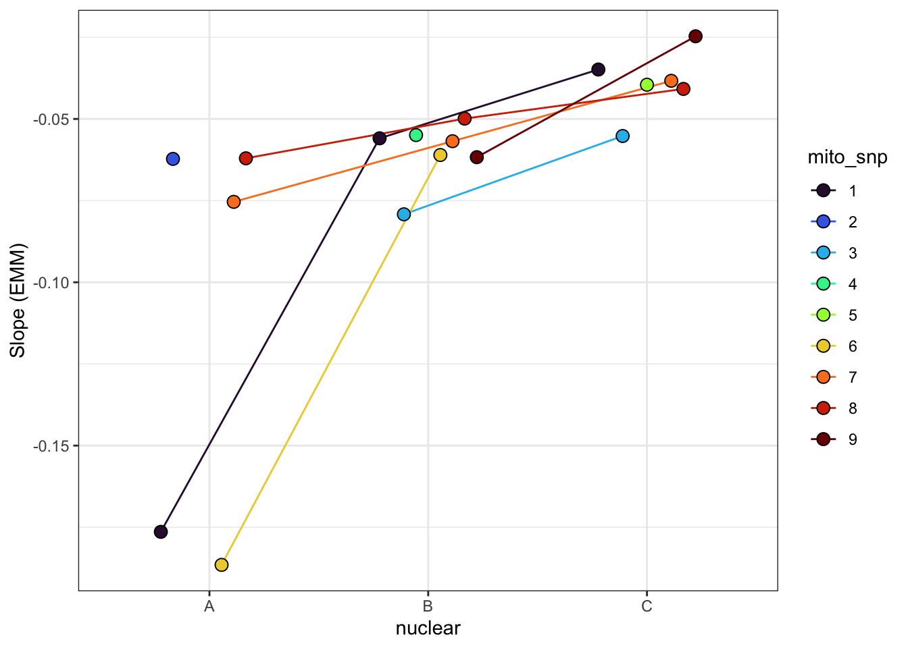
comb_all_female <- bind_rows(
emmeans(fecundity_early, ~ mito * nuclear) %>% as_tibble() %>% mutate(stage = "a) Early life"),
emmeans(fecundity_total, ~ mito * nuclear) %>% as_tibble() %>% mutate(stage = "b) Lifetime"),
emtrends(rate_glmm, c("mito", "nuclear"), var = "vial") %>% as_tibble() %>%
mutate(stage = "c) Rate of decline",
emmean = vial.trend)) %>%
ggplot(aes(x = nuclear, y = emmean, fill = mito)) +
geom_line(aes(group = mito, colour = mito), position = position_dodge(width = .5)) +
geom_point(size = 3, pch = 21, position = position_dodge(width = .5)) +
labs(y = 'Fecundity (EMM)') +
scale_colour_manual(values = met3) +
scale_fill_manual(values = met3) +
facet_wrap(~stage, scales = "free_y") +
theme_bw() +
theme() +
NULL
comb_all_female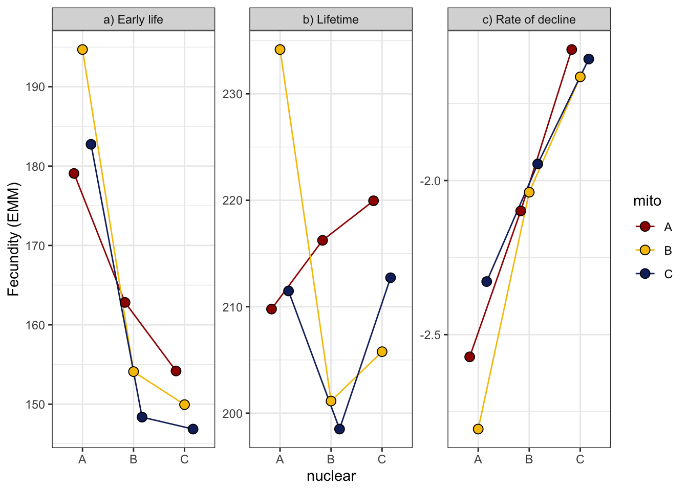
| Version | Author | Date |
|---|---|---|
| 2ee8510 | MartinGarlovsky | 2024-10-09 |
#ggsave(filename = 'figures/femaleplot_norms3.pdf', height = 4, width = 12, dpi = 600, useDingbats = FALSE)Finally, we modelled reproductive senescence using survival analysis based on the onset of infertility, i.e., the time (in vials) to event (final vial producing progeny for each female) as the response.
library(coxme)
library(survminer)
fsurv <- fert_dat %>%
mutate(bin_prog = if_else(progeny == 0, 0, 1),
mito_snp = as.factor(mito_snp))
fsurv$cum_pr <- ave(fsurv$progeny, fsurv$ID, FUN = cumsum)
fsurv <- fsurv %>% group_by(ID) %>% slice(which.min(progeny)) %>% mutate(EVENT = 1)
fit1 <- survfit(Surv(vial, EVENT) ~ mito + nuclear, data = fsurv)
#summary(fit1)
#anova(fit1)
survplot <- ggsurvplot(fit1, colour = "mito",
palette = rep(rev(met3), 3))
survplot$plot +
facet_wrap(~nuclear) +
theme_bw() +
theme(legend.position = "") +
NULL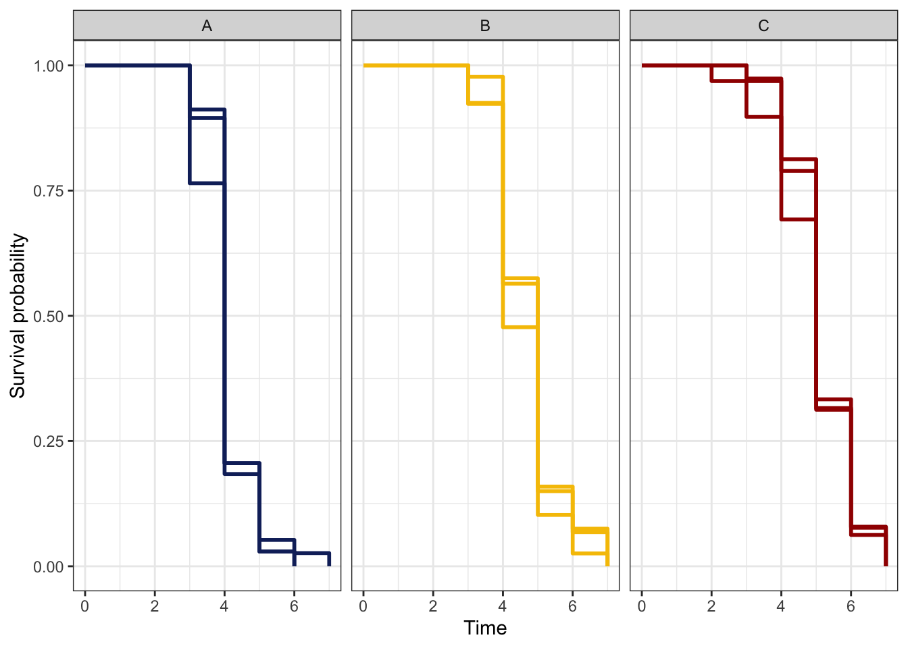
| Version | Author | Date |
|---|---|---|
| 2ee8510 | MartinGarlovsky | 2024-10-09 |
Using a simplified model without the random effects we can check the proportional hazards assumption.
plot(survfit(Surv(vial, EVENT) ~ mito + nuclear, data = fsurv),
lty = 1:4,
fun="cloglog", main = "cloglog")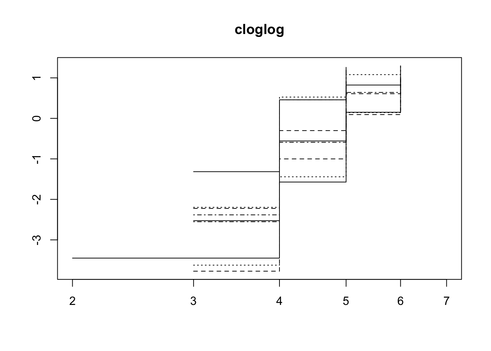
| Version | Author | Date |
|---|---|---|
| 2ee8510 | MartinGarlovsky | 2024-10-09 |
test.ph <- cox.zph(coxph(Surv(vial, EVENT) ~ mito * nuclear, data = fsurv))
ggcoxzph(test.ph)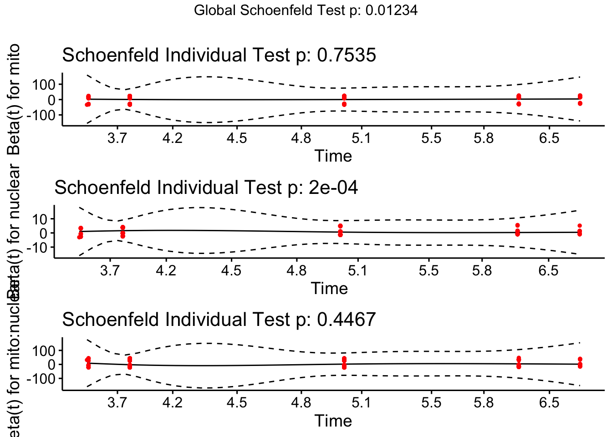
| Version | Author | Date |
|---|---|---|
| 2ee8510 | MartinGarlovsky | 2024-10-09 |
We then use likelihood ratio tests comparing the full model to submodels excluding the effect of interest.
cox.des <- coxme(Surv(vial, EVENT) ~ mito * nuclear + (1|LINE), data = fsurv)
cox.des.n1 <- coxme(Surv(vial, EVENT) ~ 1 + nuclear + (1|LINE), data = fsurv)
cox.des.n2 <- coxme(Surv(vial, EVENT) ~ mito + 1 + (1|LINE), data = fsurv)
cox.des.n3 <- coxme(Surv(vial, EVENT) ~ mito + nuclear + (1|LINE), data = fsurv)
# posthoc tests
bind_rows(anova(cox.des, cox.des.n1) %>% broom::tidy(),
anova(cox.des, cox.des.n2) %>% broom::tidy(),
anova(cox.des, cox.des.n3) %>% broom::tidy()) %>% #drop_na() %>%
kable(digits = 3,
caption = 'Likelihood ratio tests comparing the full model to submodels excluding the main effect of interest') %>%
kable_styling(full_width = FALSE) %>%
kableExtra::group_rows("Mitochondria", 1, 2) %>%
kableExtra::group_rows("Nuclear", 3, 4) %>%
kableExtra::group_rows("Mitonuclear interaction", 5, 6)| term | logLik | statistic | df | p.value |
|---|---|---|---|---|
| Mitochondria | ||||
| ~mito * nuclear + (1 | LINE) | -1605.899 | NA | NA | NA |
| ~1 + nuclear + (1 | LINE) | -1606.570 | 1.341 | 6 | 0.969 |
| Nuclear | ||||
| ~mito * nuclear + (1 | LINE) | -1605.899 | NA | NA | NA |
| ~mito + 1 + (1 | LINE) | -1627.989 | 44.180 | 6 | 0.000 |
| Mitonuclear interaction | ||||
| ~mito * nuclear + (1 | LINE) | -1605.899 | NA | NA | NA |
| ~mito + nuclear + (1 | LINE) | -1606.201 | 0.603 | 4 | 0.963 |
cox_emm <- emmeans(cox.des, ~ mito * nuclear)
# posthoc tests
emmeans(cox_emm, pairwise ~ nuclear, adjust = "tukey")$emmeans nuclear emmean SE df asymp.LCL asymp.UCL A 0.610 0.0840 Inf 0.446 0.7749 B -0.103 0.0723 Inf -0.245 0.0387 C -0.473 0.0811 Inf -0.632 -0.3138 Results are averaged over the levels of: mito Results are given on the log (not the response) scale. Confidence level used: 0.95 $contrasts contrast estimate SE df z.ratio p.value A - B 0.713 0.136 Inf 5.254 <.0001 A - C 1.083 0.142 Inf 7.601 <.0001 B - C 0.370 0.133 Inf 2.786 0.0147 Results are averaged over the levels of: mito Results are given on the log (not the response) scale. P value adjustment: tukey method for comparing a family of 3 estimates
#emmeans(cox_emm, pairwise ~ nuclear, adjust = "tukey", type = "response")
# posthoc tests
bind_rows(emmeans(cox_emm, pairwise ~ nuclear, adjust = "tukey")$contrasts %>% broom::tidy(),
emmeans(cox_emm, pairwise ~ nuclear, adjust = "tukey", type = "response")$contrasts %>% broom::tidy()) %>%
kable(digits = 3,
caption = 'Posthoc Tukey tests to compare which groups differ. Results are averaged over the levels of mito') %>%
kable_styling(full_width = FALSE) %>%
kableExtra::group_rows("log scale", 1, 3) %>%
kableExtra::group_rows("Hazard ratios", 4, 6)| term | contrast | null.value | estimate | std.error | df | statistic | adj.p.value | ratio | null |
|---|---|---|---|---|---|---|---|---|---|
| log scale | |||||||||
| nuclear | A - B | 0 | 0.713 | 0.136 | Inf | 5.254 | 0.000 | NA | NA |
| nuclear | A - C | 0 | 1.083 | 0.142 | Inf | 7.601 | 0.000 | NA | NA |
| nuclear | B - C | 0 | 0.370 | 0.133 | Inf | 2.786 | 0.015 | NA | NA |
| Hazard ratios | |||||||||
| nuclear | A / B | 0 | NA | 0.277 | Inf | 5.254 | 0.000 | 2.041 | 1 |
| nuclear | A / C | 0 | NA | 0.421 | Inf | 7.601 | 0.000 | 2.954 | 1 |
| nuclear | B / C | 0 | NA | 0.192 | Inf | 2.786 | 0.015 | 1.447 | 1 |
cox.coevo <- coxme(Surv(vial, EVENT) ~ coevolved + (1|LINE), data = fsurv)
#anova(cox.coevo)
summary(cox.coevo)Mixed effects coxme model
Formula: Surv(vial, EVENT) ~ coevolved + (1 | LINE)
Data: fsurv
events, n = 338, 338
Random effects:
group variable sd variance
1 LINE Intercept 0.3747831 0.1404624
Chisq df p AIC BIC
Integrated loglik 12.13 2.00 2.320e-03 8.13 0.49
Penalized loglik 54.41 16.58 6.524e-06 21.24 -42.15
Fixed effects:
coef exp(coef) se(coef) z p
coevolved1 0.04908 1.05030 0.09776 0.5 0.616
cox.coevo.n1 <- coxme(Surv(vial, EVENT) ~ 1 + (1|LINE), data = fsurv)
anova(cox.coevo, cox.coevo.n1) # mito NSAnalysis of Deviance Table Cox model: response is Surv(vial, EVENT) Model 1: ~coevolved + (1 | LINE) Model 2: ~1 + (1 | LINE) loglik Chisq Df P(>|Chi|) 1 -1628.0 2 -1628.1 0.2392 1 0.6248
The mito-type analysis throws an error due to the rank deficiency of the design.
# cox.snp <- coxme(Surv(vial, EVENT) ~ mito_snp * nuclear + (1|LINE), data = fsurv)
#
# summary(cox.snp)
#
# cox.snp.n1 <- coxme(Surv(vial, EVENT) ~ 1 + nuclear + (1|LINE), data = fsurv)
# cox.snp.n2 <- coxme(Surv(vial, EVENT) ~ mito_snp + 1 + (1|LINE), data = fsurv)
# cox.snp.n3 <- coxme(Surv(vial, EVENT) ~ mito_snp + nuclear + (1|LINE), data = fsurv)
#
# anova(cox.snp, cox.snp.n1) # mito NS
# anova(cox.snp, cox.snp.n2) # nuclear sig
# anova(cox.snp, cox.snp.n3) # interaction NS
sessionInfo()R version 4.4.0 (2024-04-24) Platform: aarch64-apple-darwin20 Running under: macOS Sonoma 14.6.1 Matrix products: default BLAS: /Library/Frameworks/R.framework/Versions/4.4-arm64/Resources/lib/libRblas.0.dylib LAPACK: /Library/Frameworks/R.framework/Versions/4.4-arm64/Resources/lib/libRlapack.dylib; LAPACK version 3.12.0 locale: [1] en_US.UTF-8/en_US.UTF-8/en_US.UTF-8/C/en_US.UTF-8/en_US.UTF-8 time zone: Europe/London tzcode source: internal attached base packages: [1] stats graphics grDevices utils datasets methods base other attached packages: [1] survminer_0.5.0 ggpubr_0.6.0 coxme_2.2-22 bdsmatrix_1.3-7 [5] survival_3.7-0 conflicted_1.2.0 showtext_0.9-7 showtextdb_3.0 [9] sysfonts_0.8.9 knitrhooks_0.0.4 knitr_1.48 kableExtra_1.4.0 [13] emmeans_1.10.5 DHARMa_0.4.7 lme4_1.1-35.5 Matrix_1.7-1 [17] lubridate_1.9.3 forcats_1.0.0 stringr_1.5.1 dplyr_1.1.4 [21] purrr_1.0.2 readr_2.1.5 tidyr_1.3.1 tibble_3.2.1 [25] ggplot2_3.5.1 tidyverse_2.0.0 workflowr_1.7.1 loaded via a namespace (and not attached): [1] tensorA_0.36.2.1 rstudioapi_0.17.1 jsonlite_1.8.9 [4] datawizard_1.0.0 magrittr_2.0.3 estimability_1.5.1 [7] farver_2.1.2 nloptr_2.1.1 rmarkdown_2.28 [10] fs_1.6.5 vctrs_0.6.5 MetBrewer_0.2.0 [13] memoise_2.0.1 minqa_1.2.8 rstatix_0.7.2 [16] htmltools_0.5.8.1 distributional_0.5.0 broom_1.0.7 [19] tidybayes_3.0.7 Formula_1.2-5 sass_0.4.9 [22] bslib_0.8.0 pbkrtest_0.5.3 plyr_1.8.9 [25] zoo_1.8-12 cachem_1.1.0 whisker_0.4.1 [28] mime_0.12 lifecycle_1.0.4 iterators_1.0.14 [31] pkgconfig_2.0.3 gap_1.6 R6_2.5.1 [34] fastmap_1.2.0 shiny_1.9.1 rbibutils_2.3 [37] digest_0.6.37 numDeriv_2016.8-1.1 colorspace_2.1-1 [40] patchwork_1.3.0 ps_1.8.1 rprojroot_2.0.4 [43] qgam_1.3.4 labeling_0.4.3 km.ci_0.5-6 [46] fansi_1.0.6 timechange_0.3.0 httr_1.4.7 [49] abind_1.4-8 mgcv_1.9-1 compiler_4.4.0 [52] bit64_4.5.2 withr_3.0.2 doParallel_1.0.17 [55] backports_1.5.0 carData_3.0-5 performance_0.13.0 [58] highr_0.11 ggsignif_0.6.4 MASS_7.3-61 [61] tools_4.4.0 httpuv_1.6.15 glue_1.8.0 [64] callr_3.7.6 nlme_3.1-166 promises_1.3.0 [67] grid_4.4.0 checkmate_2.3.2 getPass_0.2-4 [70] see_0.9.0 generics_0.1.3 gtable_0.3.6 [73] KMsurv_0.1-5 tzdb_0.4.0 data.table_1.16.2 [76] hms_1.1.3 car_3.1-3 xml2_1.3.6 [79] utf8_1.2.4 ggrepel_0.9.6 foreach_1.5.2 [82] pillar_1.9.0 ggdist_3.3.2 vroom_1.6.5 [85] posterior_1.6.0 later_1.3.2 splines_4.4.0 [88] lattice_0.22-6 bit_4.5.0 tidyselect_1.2.1 [91] git2r_0.35.0 gridExtra_2.3 arrayhelpers_1.1-0 [94] svglite_2.1.3 stats4_4.4.0 xfun_0.48 [97] MuMIn_1.48.4 stringi_1.8.4 yaml_2.3.10 [100] boot_1.3-31 codetools_0.2-20 evaluate_1.0.1 [103] cli_3.6.3 xtable_1.8-4 systemfonts_1.1.0 [106] Rdpack_2.6.1 munsell_0.5.1 processx_3.8.4 [109] jquerylib_0.1.4 survMisc_0.5.6 Rcpp_1.0.13 [112] coda_0.19-4.1 svUnit_1.0.6 parallel_4.4.0 [115] bayestestR_0.15.0 gap.datasets_0.0.6 viridisLite_0.4.2 [118] mvtnorm_1.3-1 lmerTest_3.1-3 scales_1.3.0 [121] insight_1.0.1 crayon_1.5.3 rlang_1.1.4